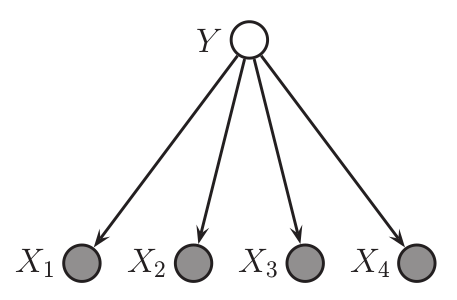
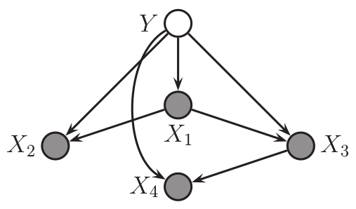
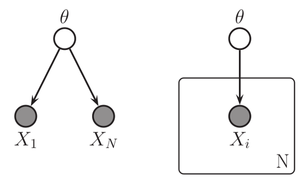
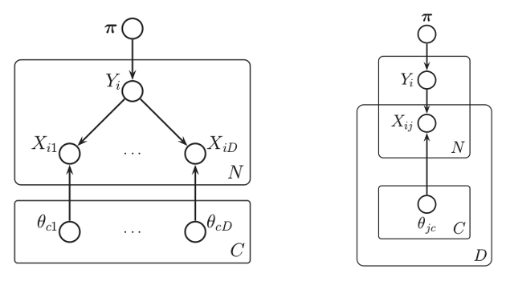
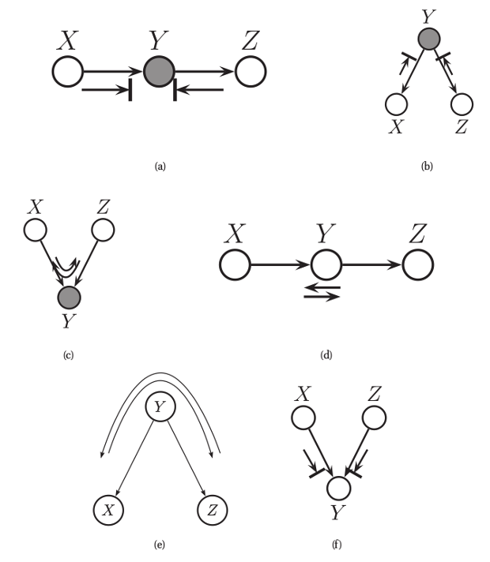
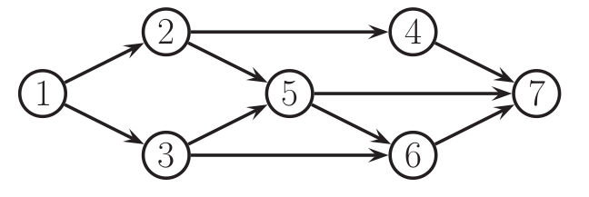
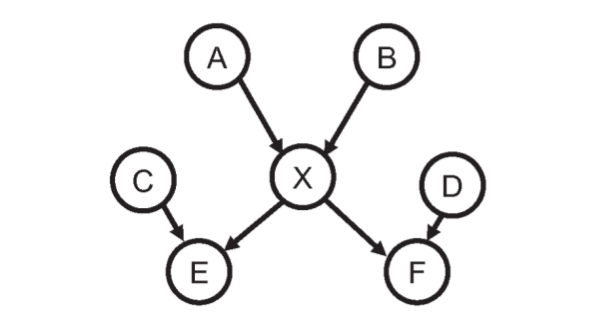
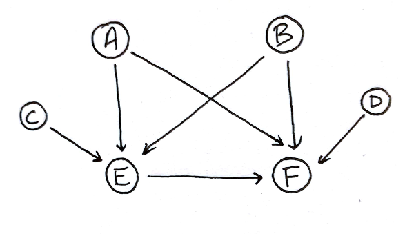

Machine Learning, a probabilistic approach (Chapter 10)
Murphy, K. “Machine Learning: A Probabilistic Approach” Massachusetts Institute of Technology (2012).
- current chapter: Directed Graphical Models
Summary
This chapter begins with an interesting quotation:
I basically know of two principles for treating complicated systems in simple ways: the first is the principle of modularity and the second is the principle of abstraction. I am an apologist for computational probability in machine learning because I believe that probability theory implements these two principles in deep and intriguing ways—namely through factorization and through averaging. Exploiting these two mechanisms as fully as possible seems to me to be the way forward in machine learning.Michael Jordan, (Frey 1998).
Suppose we had \(V\) random variables \(x_{1:V}\), each taking on one out of \(K\) values. The chain rule states that \[p(x_{1:V}) = p(x_1) p(x_2|x_1) \dotsm p(x_V| x_{1:V-1}).\] We can construct conditional probability tables \(T\): \[T_{i_1i_2\dotsm i_{V-1} k} = p(x_k | x_{i_1},\dotsc, x_{i_{V-1}}).\] But then, there are \(O(K^V)\) parameters, needing a lot of data to learn.
If we only care about evaluating the probability of a fully observed vector \(\mathbf{x}_{1 : T}\), then the more parsimonius conditional probability distribution (CPD) suffices, \(p(x_t = k| \mathbf{x}_{1: t-1})\), using only \(O(K^2V^2)\) parameters.
Other than CPDs, we can reduce the number of parameters by assuming conditional independence. Recall the definition of conditional independence: \[X \perp Y | Z \Leftrightarrow p(X,Y|Z) = p(X|Z)p(Y|Z).\] For example, for 1D sequences, the (first order) Markov assumption states that \(x_{t+1} \perp x_{1: t-1} | x_t,\) and so the joint distribution, \[p(x_{1:V}) = p(x_1) \prod_{i=1}^V p(x_t | x_{t-1}),\] is characterized by the initial probability distribution and a state transition matrix \(p(x_t = j|x_{t-1} = i)\).
More generally, if we want to other types of models of conditional independence (not necessarily a 1D sequence), there are graphical models:
Definition 1. A graphical model (GM) is a representation of a joint distribution as a (directed/undirected) graph. The nodes of the graph represent random variables and the lack of an edge between two nodes represents a CI assumption. Generally, observed variables are shaded in.
Notation. Let \(G = (V,E)\) be a graph. If \(s,t \in V\), then let \(G(s,t) = \mathbf{1}[(s,t) \in E]\) indicate when the edge \((s,t)\) is an edge. A graph is undirected when \(G(s,t) = 1 \Leftrightarrow G(t,s) = 1\) for all \(s,t \in V\). The family of a node is the node and all of its parents.
Directed Graphical Models
Definition 2. A directed graphical model (DGM) is a GM whose graph is a DAG. These are more commonly called Bayesian networks, belief networks, or causual networks.
Note: there is nothing inherently “Bayesian” about Bayesian nets, nor anything inherently “causal”.
Because DAGs have a topological ordering, a node \(x_s\) only depends on its parents, so DGMs satisfy the ordered Markov property: \[x_s \perp \mathbf{x}_{\mathrm{predecessors}(s) \setminus \mathrm{parents}(s)} | \mathbf{x}_{\mathrm{parents}(s)},\] where \(x_s\) is conditionally independent with its nonimmediate predecessors. And so, in general, we have a factorization property for DAGs: \[\begin{equation} \label{F} p(\mathbf{x}_{1:V} | G) = \prod_{t=1}^V p(x_t | \mathbf{x}_{\mathrm{parents}(t)}). \end{equation}\] If the family of each node is size \(O(F)\), then there are at most \(O(VK^F)\) parameters, compared to the original \(O(K^V)\).
Example 3 (Naive Bayes Classifier). Recall that the NBC (see chapter 3) assumes that features are conditionally independent given the class label: \[p(y, \mathbf{x}) = p(y) \prod_{j=1}^D p(x_j|y).\]

Figure 1. A graphical model corresponding to a NBC model.A graphical model can capture correlation between features. For example, if the model is a tree, then we can use a tree-augmented naive Bayes classifier (TAN) model (Friedman et. al. 1997). An example is:

Figure 2. A graphical model corresponding to a TAN model for \(D= 4\) features. In general, the tree topology may change depending on the value of \(y\).There are two reasons for using a tree instead of a generic graph:
- it is easy to find the optimal tree structure using the Chow-Liu algorithm (Section 26.3).
- It is easy to handle missing features in a tree-structured model (Section 20.2).
Example 4 (Directed Gaussian graphical models). A Gaussian Bayes net is the model where the CPDs are: \[p(x_t | \mathbf{x}_{\mathrm{parents}(t)}) = \mathcal{N}(x_t | \mu_t + \mathbf{w}_t\cdot \mathbf{x}_{\mathrm{parents}(t)}, \sigma_t^2).\] This is called a linear Gaussian CPD. The product of these CPDs yields: \(p(\mathbf{x}) = \mathcal{N}(\mathbf{x}| \mathbf{\mu}, \mathbf{\Sigma}).\) Let \(\mathbf{W}\) be the matrix whose rows are \(\mathbf{w}_t^T\). Let \(\mathbf{S} = \mathrm{diag}(\mathbf{\sigma})\). Then, we have: \[\begin{align*} (\mathbf{x} - \mathbf{\mu}) = \mathbf{W}(\mathbf{x} - \mathbf{\mu}) + \mathbf{e}, \end{align*}\] where \(\mathbf{e} \sim \mathcal{N}(0, \mathbf{S})\). Because of the DAG assumption, \(\mathbf{W}\) is lower triangular. It follows that \(\mathbf{e} = (\mathbf{I} - \mathbf{W}) (\mathbf{x} - \mathbf{\mu})\). Letting \(\mathbf{U} = (\mathbf{I} - \mathbf{W})^{-1}\), we have: \[\begin{align*} \mathbf{\mu} &= \mathbf{x} - \mathbf{U} \mathbf{e}\\ \mathbf{\Sigma} &= \mathrm{cov}[\mathbf{x} - \mathbf{\mu}] = \mathrm{cov}[\mathbf{U} \mathbf{e}] = \mathbf{U} \mathbf{S}^2 \mathbf{U}^T. \end{align*}\] Thus, the regression weights correspond to a Cholesky decomposition of \(\mathrm{\Sigma}\).
Inference
Graphical models let us perform probabilistic inference, where given observed or visible variables \(\mathbf{x}_v\), we try to compute a posterior distribution on hidden variables \(\mathbf{x}_h\). That is, we condition on the observed data by clamping the visible variables to their observed values: \[p(\mathbf{x}_h| \mathbf{x}_v) = \frac{p(\mathbf{x}_h, \mathbf{x}_v)}{p(\mathbf{x}_v|\theta)}.\] The normalization constant \(p(\mathbf{x}_v|\theta)\) is the likelihood of the data or the probability of the evidence.
If we only care about some of the hidden variables, we partition the hidden variables into the query variables \(\mathbf{x}_q\) that we hope to understand and the nuisance variables \(\mathbf{x}_n\) that we want to marginalize out. Thus, \[p(\mathbf{x}_q | \mathbf{x}_v, \theta) = \sum_{\mathbf{x}_n} p(\mathbf{x}_q, \mathbf{x}_n| \mathbf{x}_v, \theta).\] Notice that if there \(V\) hidden variables, each of which taking on one of \(K\) values, then there are \(O(K^V)\) terms in the marginal distribution \(p(\mathbf{x}_v | \theta)\). It is possible to exploit the factorization in GM to use \(O(VK^{w+1})\) computations, where \(w\) is the treewidth of the graph. (See Chapter 20).
Learning
While inference is the computation of \(p(\mathbf{x}_h| \mathbf{x}_v, \theta)\) where the parameters \(\theta\) are assumed to be known, learning is the estimation of parameters of the model. The MAP estimate of the parameters give data is: \[\hat{\theta} = \mathrm{arg\ max}_{\theta} \sum_{i=1}^N \log p(\mathbf{x}_{i,v}|\theta) + \log p(\theta).\] If the prior is uniform, then this is just MLE. The Bayesian perspective sees the parameters as unknown variables, so from that perspective, there is no difference between inference and learning.
Thus, from a Bayesian perspective, the only difference between hidden variables and parameters is that the number of hidden variables grows with the data, while the parameters are fixed. In order to avoid overfitting, we must integrate out the hidden variables, while a point estimation techniques may work for parameters.
Plate Notation
Suppose \(X_1,\dotsc, X_N\) are conditionally independent on \(\theta\). If our beliefs about \(\theta\) don’t depend on the order that the \(X_i\)’s came, then we say that the data is exchangeable. In such a case, the plate notation can reduce visual clutter: we draw a plate around repeated variables, and we say that the nodes within the plate will be repeated when the model is unrolled. For example:

Figure 3. Left: the data \(X_i\) are conditionally i.i.d. given \(\theta\). Right: the same model, in plate notation.More complicated examples can be constructed. For example, the following is the DGM of a naive Bayes classifiers with parameter \(\theta\).

Figure 4. Left: \(D\) conditionally independent variables \(X_1,\dotsc, X_D\) are generated given a \(Y\). Here, there are parameters \(\theta_{c}\) for every class \(c\) for \(Y\). It is implied that \(\theta_{jc}\) is used to generate \(x_{ij}\) iff \(y_i =c\). Otherwise, it is ignored.This is an example of context specific independence, since \(x_{ij} \perp \theta_{jc}\) holds iff \(y_i \ne c\).
Learning from Complete Data
If there are no hidden variables, then we say that the data is complete. Then, the likelihood of the parameter \(\theta\) factorizes: \[p(D|\theta) = \prod_{i=1}^N p(\mathbf{x}_i|\theta) = \prod_{t=1}^V p(D_t | \theta_t),\] where \(D_t\) is the data associated with the node \(t\) and its parents. That is, the likelihood decomposes according to its graph structure. If the prior factorizes as well, \(p(\theta) = \prod_{t=1}^V p(\theta_t)\), then the posterior also factorizes: \[p(\theta|D) \propto \prod_{t=1}^V p(D_t|\theta_t) p(\theta_t).\]
Conditional Independence Properties of DGMs
Let \(I(G)\) be the set of all conditional independence (CI) assumptions that a graph makes. We say that \(G\) is an I-map (independence map) for a probability distribution \(p\), or that \(p\) is Markov with respect to \(G\) iff \(I(G) \subset I(p)\), where \(I(p)\) is the set of all CI statments that hold for \(p\).
The complete graph is an I-map for any probability distribution over its nodes. We can also consider any minimal I-map for a probability distribution \(p\). Our goal now is to determine when \(\mathbf{x}_A \perp_G \mathbf{x}_B | \mathbf{x}_C\).
The following topological definition can characterize when subsets of nodes of a graph are conditionally independent.
Definition 5. An undirected path \(P\) is d-separated by a set of nodes \(E\) (containing the evidence) iff at least one of the following conditions hold:
- \(P\) contains a chain \(s \to m \to t\) or \(s \leftarrow m \leftarrow t\), where \(m \ in E\)
- \(P\) contains a tent or form, \(s \swarrow ^m \searrow t\), where \(m \in E\)
- \(P\) contains a collider or v-structure, \(s \searrow _m \swarrow t\), where \(m\) is not in \(E\) and neither is any descendents of \(m\).
Definition 6. We say that a set of nodes \(A\) is d-separated from a different set of nodes \(B\) given a third observed set \(E\) iff each undirected path from every node \(a \in A\) to every node \(b \in B\) is d-separated by \(E\).
Proposition 7. Let \(G\) be a DAG. Then: \[\begin{equation}\label{G} \mathbf{x}_A \perp_G \mathbf{x}_B |\mathbf{x}_E \Longleftrightarrow \textrm{$A$ is d-separated from $B$ given $E$}. \end{equation}\]
This is the directed global Markov property.

Figure 5. Visualize our knowledge of a variable that is not explained away by evidence as a ball moving around the nodes; we call this the Bayes ball. Arrows with a line across the head indicate when the ball is blocked. Otherwise, the ball may freely traverse the edges.The three rules of the Bayes ball follows.
- The chain structure \(X \to Y \to Z\) encodes: \[\begin{align*} p(x,y,z) = p(x) p(y|x) p(z|y). \end{align*}\] Conditioning on \(y\) then yields: \[\begin{align*} p(x,z|y) = \frac{p(x) p(y|x) p(z|y)}{p(y)} = p(x|y) p(z|y), \end{align*}\] and so \(x \perp z |y\).
- The tent structure \(X \leftarrow Y \rightarrow Z\) encodes: \[\begin{align*} p(x,y,z) = p(y) p(x|y) p(z|y), \end{align*}\] so similarly, when we condition on \(y\), we see that \(x \perp z | y\).
- The v-structure \(X \rightarrow Y \leftarrow Z\) encodes: \[\begin{align*} p(x,y,z) = p(x) p(y|x,z) p(z), \end{align*}\] where conditioning on \(y\) leads to: \[\begin{align*} p(x,z|y) = \frac{p(x) p(z) p(y|x,z)}{p(y)}, \end{align*}\] so \(x \not\perp z|y\), even though \(x\) and \(z\) are marginally independent, \(p(x,z) = p(x)p(z)\). This effect is called explaining away, inter-causal reasoning or Berkson’s paradox. For example, if we observe the sum of two independent coin flips, then conditioned on this knowledge, the two flips are no longer independent.
Furthermore, if instead of observing \(Y\), we observe a descendent, then we could learn something about \(Y\). Then, \(X\) and \(Z\) must compete to explain this. For example, though we not observe \(Y\), if we observe a descendant \(Y'\) that always take on the same value as \(Y\), we effectively observe \(Y\).
Corollary 8. Let \(t\) be a node, and let \(\mathrm{nd}(t)\) be its non-descendants. Let \(\mathrm{pa}(t)\) be its parents. Then, \[\begin{equation} \label{L} t \perp \mathrm{nd}(t) \setminus \mathrm{pa}(t) | \mathrm{pa}(t). \end{equation}\] This is called the directed local Markov property.
Corollary 9. Let \(t\) as before. Let \(\mathrm{pred}(t)\) be its predecessors. Then, \[\begin{equation}\label{O} t \perp \mathrm{pred}(t) \setminus \mathrm{pa}(t) | \mathrm{pa}(t). \end{equation}\] This follows because \(\mathrm{pred}(t) \subset \mathrm{nd}(t)\). This property is called the ordered Markov property.
Thus, we have three Markov properties for DAGs: the directed global Markov property G, the directed local Markov property L, and the ordered Markov property O, Equations \(\ref{G}\), \(\ref{L}\), and \(\ref{O}\), respectively.
We see that \(G \implies L \implies O\). In fact, \(O \implies L \implies G\), as in (Koller and Friedman 2009). Additionally, we saw that DAGs satisfy the factorization property F in Equation \(\ref{F}\). It’s clear that \(O \implies F\), and in fact, the converse \(F \implies O\) is also true (Koller and Friedman 2009).
Definition 10. The Markov blanket of a node \(t\) is the set of nodes that renders a node \(t\) conditionally independent of all other nodes in the graph.
In particular, the Markov blanket \(\mathrm{mb}(t)\) is equal to the nodes parents, children, and coparents (any node that are also parents of its children). Thus, \(t\)’s full conditional (i.e. conditioning everything except \(t\)) depends only on its Markov blanket. That is, if we let \(\mathbf{x}_{\hat{t}}\) denote all variables except for \(x_t\), the full conditional is: \[\begin{align*} p(x_t| \mathbf{x}_{\hat{t}}) &= \frac{p(x_t, \mathbf{x}_{\hat{t}})}{p(\mathbf{x}_{\hat{t}})}\\ &\propto p\left(x_t|\mathbf{x}_{\mathrm{pa}(t)}\right) \prod_{s \in \mathrm{ch}(t)} p\left(x_s| \mathbf{x}_{\mathrm{pa}(s)}\right), \end{align*}\] since any term not involved with \(x_t\) will cancel out; the only terms left are those that contain \(x_t\) in the scope.
For example, in the DGM below, we have: \[\begin{equation*} p(x_5 | \mathbf{x}_{\hat{5}}) \propto p(x_5|x_2,x_3) p(x_6 | x_3,x_5) p(x_7| x_4,x_5,x_6). \end{equation*}\]

Figure 6. An example of a directed graphical model.Exercises
Problem 1. [Exercise 10.1] Marginalizing a node in a DGM. Consider the following DAG \(G\):

Assume it is a minimal I-map for \(p(A,B,C,D,E,F,X)\). Now consider marginalizing out \(X\). Construct a new DAG \(G'\) which is a minimal I-map for \(p(A,B,C,D,E,F)\). Specify and justify which extra edges need to be added.
To marginalize out \(X\), we need to connect every single parent of \(X\) to every one of its children, and form an acyclic tournament on its children:
As a simple example of \(p(A,B,C,D,E,F,X)\) such that the new collection of arrows is minimal, let the random variable \(X = (A,B,Z)\), where \(Z\) is some extra randomness independent of \(A,B,C,D\). Furthermore, let \(E = (C,X,Z)\), and \(F= (D,X,Z)\). Then, when we marginalize away \(X\), we see that each of the new arrows above are necessary.
On the other hand, before we marginalized away \(X\), for any of the remaining pairs of nodes \((R,S)\) with no edge between them, we knew that \(p(R,S) = p(R)p(S)\). Thus, even after marginalizing out \(X\), this remains true.
Problem 2. [Exercise 10.3] Markov blanket for a DGM. Prove that the full conditional for a node \(i\) in a DGM is given by: \[\begin{align*} p(x_t| \mathbf{x}_{\hat{t}}) &\propto p\left(x_t|\mathbf{x}_{\mathrm{pa}(t)}\right) \prod_{s \in \mathrm{ch}(t)} p\left(x_s| \mathbf{x}_{\mathrm{pa}(s)}\right). \end{align*}\]
Problem 3. [Exercise 10.9] Moralization does not introduce new independence statements. Recall that the process of moralizing a DAG means connecting together all “unmarried” parents that share a common child, and then dropping all the arrows. Let \(M\) be the moralization of a DAG \(G\). Show that \(\mathrm{CI}(M) \subset \mathrm{CI}(G)\), where CI are the set of conditional independence statements implied by the model.
Discussion
Note 1. In the Conditional Independence Properties of DGMs section, we said that the complete graph is an I-map for any probability distribution. To be rigorous, we need to make sure that there exists a complete DAG on a collection of \(n\) nodes, for all \(n \in \mathbb{N}\) (i.e. there exists acyclic tournaments). Indeed, this is easily shown by just giving a total order on the vertices.
Furthermore, there exist probability distributions over \(G\) such that the complete DAG is I-map minimal. In particular, let \(X_1,\dotsc, X_n\) be \(n\) nodes on a complete graph. Independently assign each edge the result of a coin toss. Let \(X_i\) be the results of all coin tosses for edges adjacent to \(i\). From this construction, no two distinct \(X_i, X_j\)’s are conditionally independent, even after conditioning on everything else.
Note 2. It seems that given a graph \(G\) and any probability distribution \(p\) over its node, for any node \(X\) in \(G\), the construction described in Problem 1 will always produce a new graph \(G'\) that is Markov over the distribution \(p_{\hat{X}}\) where \(X\) is marginalized away. We only need to worry about the Markov blanket of \(X\). Marginalizing away \(X\) won’t change conditional independence relations between parents of \(X\). All other edges between parents of \(X\) and children of \(X\), and edges within children have been added.
Furthermore, there are probability distributions where each of the new edges are necessary. In particular, consider the graph that is a directed rooted tree of depth 1, where the root \(X\) has \(n\) children \(X_1,\dotsc, X_n\). Let \(X_1,\dotsc, X_n\) correspond to the random variables from the previous note, and let \(X = (X_1,\dotsc, X_n)\). The \(X_i\)’s are all conditionally independent given \(X\), though once we marginalize out \(X\), we are left with the previous situation, where we saw we needed an acyclic tournament.
Question 3. I don’t understand the distinction the book makes between a conditional probability table and a conditional probability distribution from the very beginning of the chapter. Why does the latter only use \(O(K^2V^2)\) parameters?
Question 4. This section defines a directed acyclic graph as “a directed graph with no directed cycles” and a directed tree as “a DAG in which there are no directed cycles”. There seems to be no distinction?
Question 5. What does it mean that “there is nothing inherently ‘Bayesian’ about Bayesian networks” or “nothing inherently causal”?
Note 6. Follow up on chapters 20, 26 on TAN models and the use of trees.
Note 7. Review the Cholesky decomposition.
Further Reading
- Chapter 20, for how to use only \(O(VK^{w+1})\) time instead of \(O(K^V)\).
- [Koller and Friedman 2009] Probabilistic Graphical Models: principles and techniques.